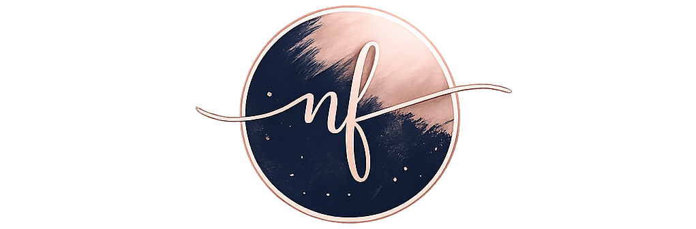

Nadia N. Ferguson
Email: nadia.ferguson02@gmail.com | Phone: (502) 653-9320 | LinkedIn: www.linkedin.com/in/nadiaferguson
About Me
Hi, I’m Nadia! You can call me a product-minded builder with a passion for creating meaningful digital experiences that solve real problems.
What excites me most about technology is its ability to create impact. Whether I’m shaping product direction, improving workflows, or building web projects, I enjoy blending creativity with structure to create things that are both functional and intuitive.
A few things that pique my interest:
- Turning messy ideas into organized, meaningful solutions
- Naturally curious and always exploring new ideas, tools, and technologies
- Continuously learning through web development, design, and creative problem-solving
- Building side projects that push me creatively and technically.
Outside of work, I enjoy staying active, so you can usually find me hiking, rollerblading, learning Spanish, supporting my local schools, or diving into a new creatve or techincal project.
This site is a space where I share projects, ideas, and pieces of the work I’m continuing to grow through — both professionally and creatively.